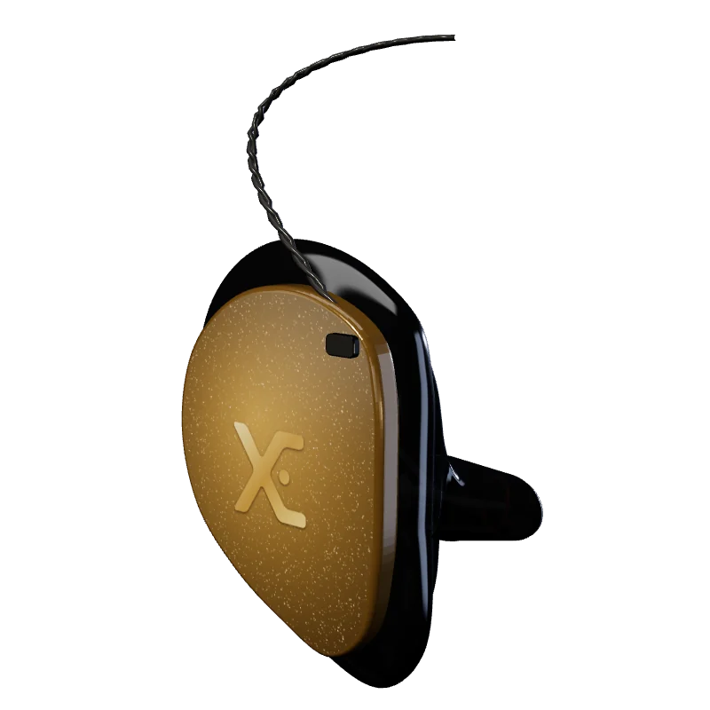
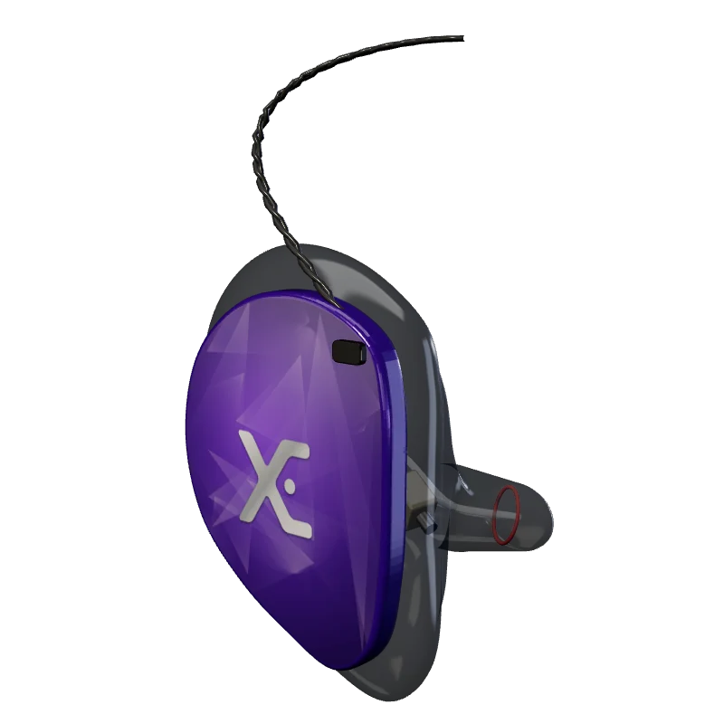
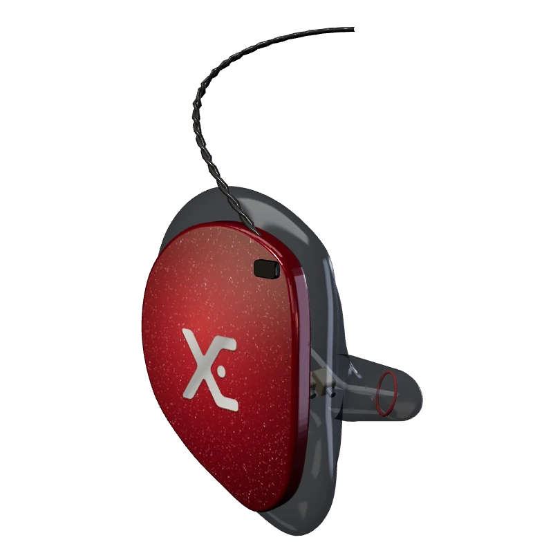
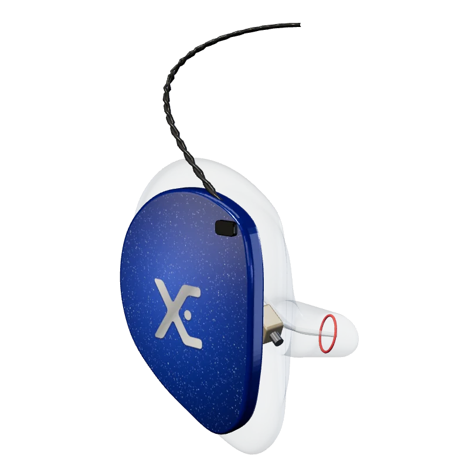

Agudo e detalhe · Pra quem precisa ouvir tudo
XE14/PRO
O topo absoluto da linha
O que você escuta aqui é o que está na gravação. Ponto.
Indicado paraAudiófilos — o som mais puro
Fica pronto em cerca de 4 semanas depois do molde aprovado
A combinação que você montar aqui vai junto na mensagem do WhatsApp. Madeira, aço escovado, cristais e a sua logo gravada também são possíveis, em mais de 20 cores.
- 1 ano de garantia
- 60 dias pra ajuste
- Feito no Brasil
No palcoFelipe Amorim usa XE14/PRO
Assinatura sonora
Quantos drivers cuidam de cada faixa
Toque numa faixa pra ver esses drivers acenderem no 3D.
Crossover de 4 vias. A Xtreme Ears publica os seis médios do HexaDrive Array™ e o driver E50D de agudo. A divisão dos outros sete não é divulgada, e no 3D eles aparecem em cinza.
Como soa
O topo absoluto da linha
O flagship. Catorze microdrivers num crossover de quatro vias, com o HexaDrive Array™ — seis drivers em formação hexagonal dedicados só às médias, a faixa mais crítica do espectro — e o driver E50D de alta frequência, com resposta estendida até 50 kHz. Tecnologia de cancelamento de distorção harmônica mantém a pureza dos médios mesmo em volume alto.
HexaDrive Array™
Seis drivers só pros médios: clareza vocal e instrumental sem precedente na faixa mais crítica.
Driver E50D
Agudo cristalino com extensão até 50 kHz — além do audível, mas o harmônico se sente.
Distorção ultrabaixa
Pureza mantida no volume de palco, não só no volume de teste.
Ficha técnica
Configuração dos drivers
- 14 microdrivers de armadura balanceada
- 6 drivers para médias — HexaDrive Array™
- Driver E50D para altas frequências
- 1 crossover integrado de quatro vias
- Resposta de frequência
- estendida até 50 kHz
- Crossover
- 4 vias
Na caixa
- Fone de ouvido in ear moldado
- Ferramenta de limpeza para o duto de saída
- Desumidificador de sílica gel
- Plug adaptador estéreo
- Cordão Xtreme Ears
- Manual do usuário
Como você recebe o seu
Do primeiro contato
ao XE14/PRO no palco.
- 01
Conversa
Você conta o que toca e onde. O especialista confirma se o XE14/PRO é o certo ou indica outro.
- 02
Molde
Você recebe a lista de fonoaudiólogos perto de você. Concha completa e canal até a segunda curva.
- 03
Aprovação
Foto, vídeo ou videochamada com o time durante a consulta. Só segue molde aprovado.
- 04
Do seu jeito
Cor da concha, faceplate, cabo e a sua logo gravada, se quiser.
- 05
Entrega
Cerca de 4 semanas após o molde chegar. Frete grátis, 1 ano de garantia e 60 dias pra ajuste.
- 1 anode garantia contra defeito de fabricação e entupimento
- 60 diaspra ajustar o molde, inclusive refazendo a concha
- Desde 2010projetando e fabricando in-ear moldado no Brasil
- Frete grátispra todo o Brasil, com rastreio
Compare
Outros que podem servir.

XE ONEMAX/PRO
Musical, aveludado e equilibrado
Técnicos de som, vocalistas e tecladistas

XE12/PRO
Resolução máxima e palco sonoro
Vocalistas, audiófilos, técnicos e produtores

XE ONE+/PRO
Separação instrumental e som limpo
Bateristas, baixistas e guitarristas
Dúvidas
Sobre o XE14/PRO.
Por que não dá pra comprar direto no carrinho?
Dá, mas o moldado só começa a ser feito depois do pré-molde do seu ouvido. Falar antes com o especialista evita escolher o modelo errado pro que você toca e já sai com a indicação de onde fazer o molde.
Quanto tempo leva?
Cerca de 4 semanas depois que o pré-molde aprovado chega na Xtreme Ears. Se tiver faceplate com arte, o prazo conta a partir da arte aprovada também. Universais e acessórios saem em até 2 dias úteis.
E se o fone não encaixar direito?
As conchas de acrílico têm 60 dias pra ajuste do molde, o que pode incluir refazer a concha. O fone tem 1 ano de garantia contra defeito de fabricação e entupimento.
Posso devolver um moldado?
Não, porque ele é feito pro seu ouvido e não serve em mais ninguém. Dá pra trocar por outro modelo pagando a diferença. Universais podem ser trocados em até 7 dias, sem uso e na embalagem original.
Mais drivers é sempre melhor?
Não. Mais drivers dão mais resolução e separação, mas o certo é o que combina com o seu instrumento. Baterista costuma render mais com punch no grave do que com 12 drivers. É isso que a conversa resolve.